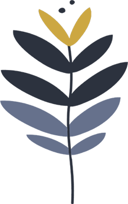

Projeto
A vida acontece em ciclos.
O Ciclos é um projeto social GRATUITO comprometido em apoiar mulheres que estejam encontrando alguma dificuldade em engravidar naturalmente.
É uma inciativa que envolve acolhimento, mas que, por ironia do destino, nasce em meio ao isolamento social. Estamos passando por um momento ímpar da humanidade: o afastamento físico imposto por um vírus. Mas o ser humano se reinventou e se aproximou virtualmente.
Como todo ciclo, essa fase teve um começo e também terá um fim.
Para muitas mulheres, algumas já pacientes da Reprodução Assistida, o sonho da gestação foi adiado pela pandemia de COVID-19.
Diante de uma doença nova, com tantas incertezas, a primeira recomendação foi que os tratamentos de reprodução assistida fossem suspensos. Hoje, já temos flexibilidade e alguns tratamentos estão sendo retomados.
Isso também vai passar!
Nosso objetivo, nesse momento, é oferecer suporte e ferramentas para que você passe por esse ciclo da melhor maneira possível. Nossa munição, nessa batalha, é a informação.
Por isso, você está convidada para participar de um ciclo de encontros exclusivos para mulheres que encontram dificuldades na jornada para engravidar.
Queremos dividir conhecimento e, ao mesmo tempo, escutar e conhecer você, ajudá-la a passar por essa fase e prepará-la para o próximo ciclo, o da realização.
Para isso, organizamos encontros gratuitos, com vagas limitadas. Utilizaremos salas virtuais exclusivas para nos encontrar e discutir com total privacidade a respeito de alguns assuntos.
- 26/05/20 - TERÇA Reserva ovariana e o impacto na fertilidade feminina;
- 29/05/20 - SEXTA Etapas da fertilização in vitro;
- 02/06/20 - TERÇA Fator masculino de infertilidade;
- 05/06/20 - SEXTA Nutrição e fertilidade.
Encontros sempre às 18h
Todos os encontros serão on-line e ao vivo. Se você se interessou e gostaria de participar do Projeto Ciclos, responda a todas as perguntas abaixo e seja muito bem-vinda!